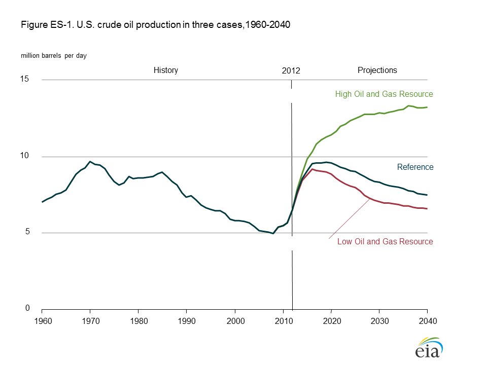
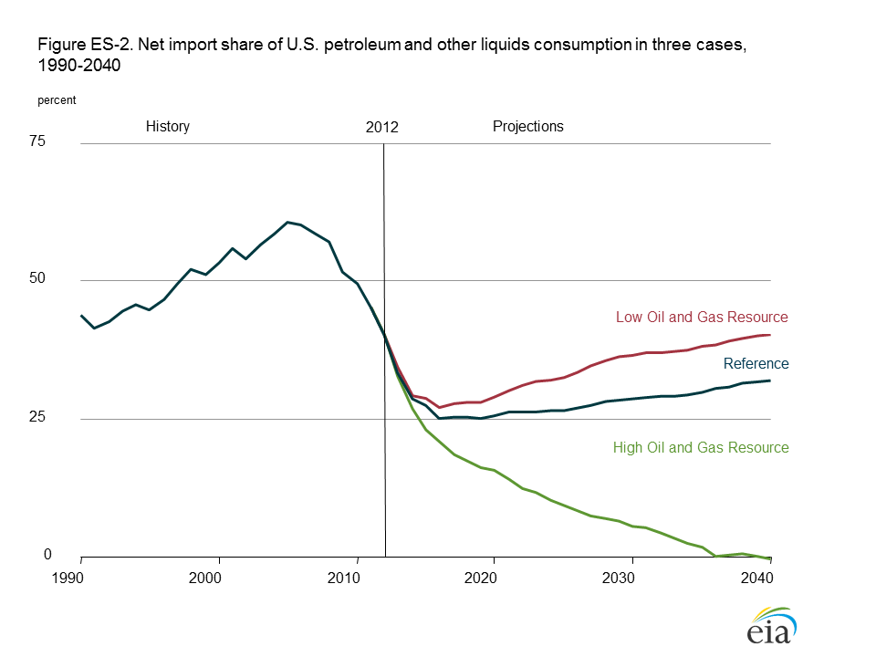
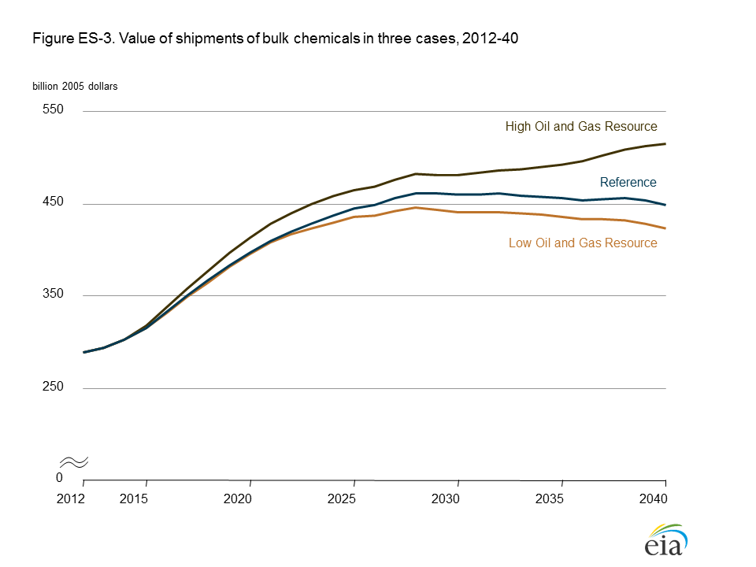
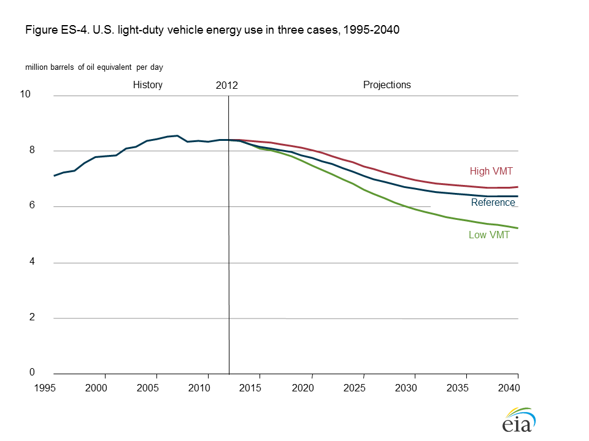
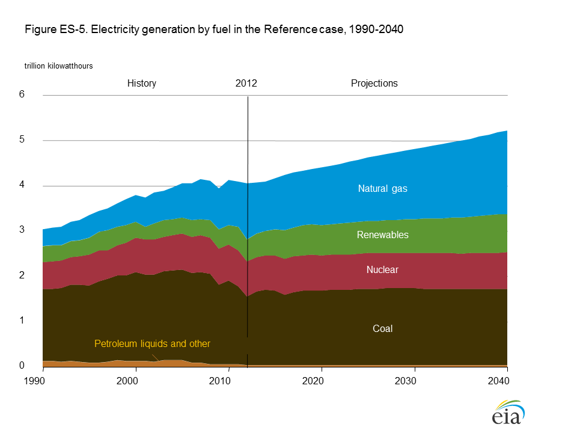
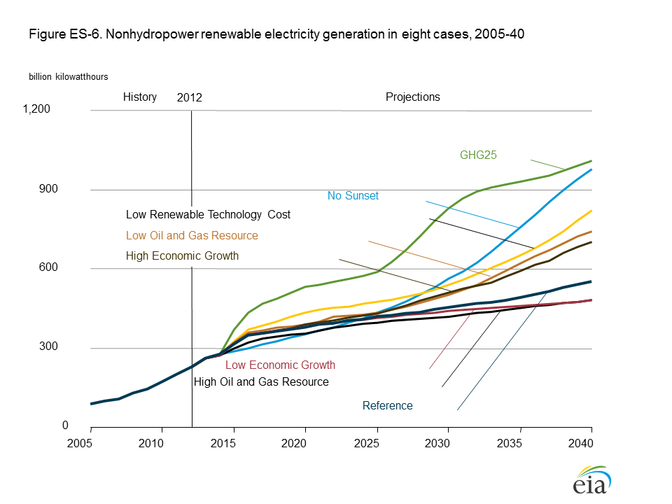
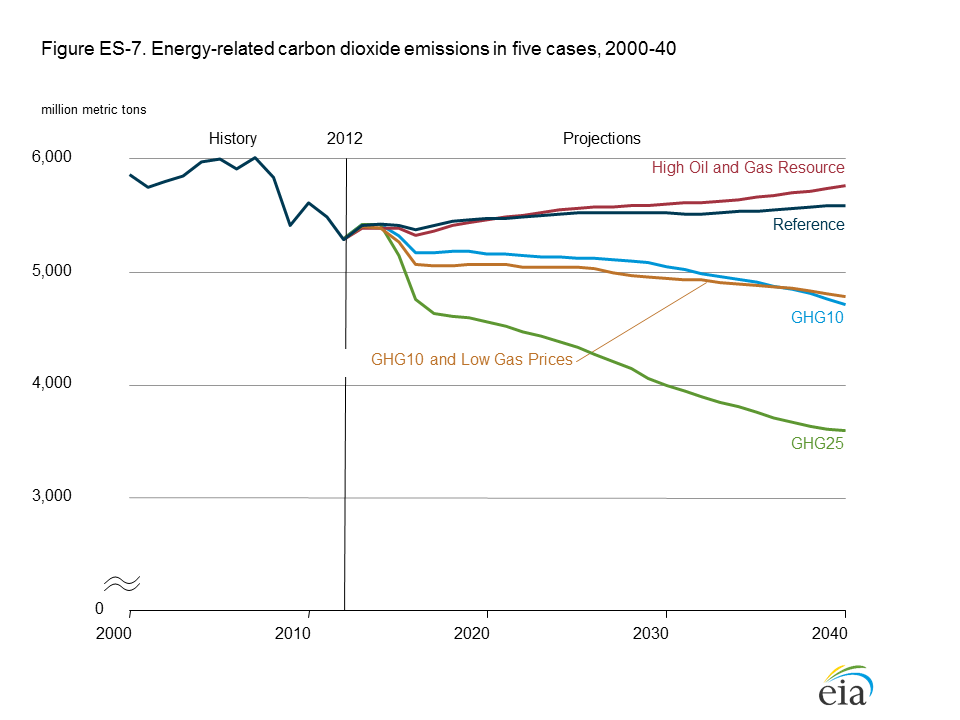

{kind=link}
{kind=link}
Annual Energy Outlook 2014
Release Date: May 7, 2014 | Next Release Date: March 2015 | See schedule | full report
Executive Summary
Projections in the U.S. Energy Information Administration's Annual Energy Outlook 2014 (AEO2014) focus on the factors that shape the U.S. energy system over the long term. Under the assumption that current laws and regulations remain unchanged, the AEO2014 Reference case provides a basis for examination and discussion of energy production, consumption, technology, and market trends and the direction they may take in the future. AEO2014 also includes alternative cases that explore important areas of uncertainty for markets, technologies, and policies in the U.S. energy economy (see Appendix E for discussion of detailed case assumptions). Many of the implications of the alternative cases are discussed in the Issues in Focus section of AEO2014.
Key results highlighted in the AEO2014 Reference and alternative cases include:
- Growing domestic production of natural gas and oil continues to reshape the U.S. energy economy, largely as a result of rising production from tight formations, but the effect could vary substantially depending on expectations about resources and technology.
- Industrial production expands over the next 10 to 15 years as the competitive advantage of low natural gas prices provides a boost to the industrial sector with increasing natural gas use.
- There is greater upside uncertainty than downside uncertainty in oil and natural gas production; higher production could spur even more industrial growth and lower the use of imported petroleum.
- Improvement in light-duty vehicle (LDV) efficiency more than offsets modest growth in vehicle miles traveled (VMT) that reflects changing driving patterns, leading to a sharp decline in LDV energy use.
- Evolving natural gas markets spur increased use of natural gas for electricity generation and transportation, as well as expanded export opportunities.
- Improved efficiency of energy use in the residential and transportation sectors and a shift away from more carbon-intensive fuels such as coal for electricity generation help to stabilize U.S. energy-related carbon dioxide (CO2) emissions.
Expected gains in tight oil production drive projected growth in total petroleum and other liquids production
Growth in crude oil production from tight oil and shale formations supported by identification of resources and technology advances have supported a nearly fourfold increase in tight oil production from 2008, when it accounted for 12% of total U.S. crude oil production, to 2012, when it accounted for 35% of total U.S. production. Total projected U.S. crude oil production in the AEO2014 Reference case reaches 9.6 million barrels per day (MMbbl/d) in 2019—3.1 MMbbl/d more than in 2012. Over the same period, tight oil production grows by 2.5 MMbbl/d, to 4.8 MMbbl/d or 50% of the national total.
In the Reference case, tight oil production begins to slow after 2021, contributing to a decline in total U.S. oil production through 2040. However, tight oil development is still at an early stage, and the outlook is uncertain. Changes in U.S. crude oil production depend largely on the degree to which technological advances allow production to occur in potentially high-yielding tight and shale formations. They also depend on the assumed estimated ultimate recovery (EUR) for wells drilled in those formations, in addition to assumptions about well spacing and production patterns. To address these uncertainties, AEO2014 includes High Oil and Gas Resource and Low Oil and Gas Resource cases (Figure ES-1). In the High Oil and Gas Resource case, tight oil production reaches 8.5 MMbbl/d in 2035 (compared to 3.7 MMbbl/d in the Reference case), with total U.S. crude oil production reaching 13.3 MMbbl/d in the following year (compared to 7.8 MMbbl/d in the Reference case).

figure data
A comparison of the Reference case and High Oil and Gas Resource case demonstrates the significant impact that technological
development and productivity gains in tight oil plays can have on net imports of crude oil and petroleum products. In the Reference
case, the share of net crude oil and petroleum product imports
as a percentage of total U.S. product consumed declines
from 41% in 2012 to 25% in 2016, remains close to that level
for several years, and then rises to 32% in 2040 (Figure
ES-2). In the High Oil and Gas Resource case, domestically
produced crude oil displaces more expensive imported crude
at domestic refineries, and U.S. finished petroleum products
become more competitive worldwide. The share of total
U.S. product consumed represented by net crude oil and
petroleum product imports in the High Oil and Gas Resource
case declines to 15% in 2020 and continues to fall through
2040. The United States becomes a net exporter of crude oil
and petroleum products at the end of the projection period.
Among the most uncertain aspects of this analysis are the potential effects of alternative resource and technology assumptions on the global market for liquid fuels, which is highly integrated. Regardless of how much the United States reduces its reliance on imported liquids, consumer prices will not be insulated from global oil prices set in global markets for crude oil and petroleum products. Strategic choices made by leading oil-exporting countries could result in U.S. price and quantity changes that differ significantly from those presented in this outlook.

figure data
U.S. industrial production is spurred by abundant and relatively inexpensive natural gas
The AEO2014 Reference case projects robust growth in industrial production, with the manufacturing sector benefitting from abundant and relatively inexpensive natural gas, especially in the first 15 years of the projection. Low natural gas prices and increased availability of natural gas and related resources such as hydrocarbon gas liquids (HGL) benefit the U.S. industrial sector in multiple ways. Natural gas is used as a fuel to produce heat and to generate electricity and, along with HGL products, is also used as a feedstock to produce chemicals, pharmaceuticals, and plastics. In addition, with generally lower energy prices resulting in more rapid economic growth, demand for industrial products increases.
Bulk chemicals account for much of the increased growth in manufacturing output in the Reference case (Figure ES-3). Industrial production of bulk chemicals, which also benefits from increased supply of HGL, grows by 3.4%/year from 2012 to 2025 in the AEO2014 Reference case. The near-term competitive advantage diminishes over time, however, and growing competition from abroad slows U.S. output growth after 2030 as domestic natural gas becomes less cost-advantaged compared with prices at other locations, resulting in increased competition from newer facilities that are developed abroad.

figure data
The higher level of industrial production leads to growth in natural gas consumption in the U.S. industrial sector, from 8.7 quadrillion British thermal units (Btu) in 2012 to 10.6 quadrillion Btu in 2025 in the Reference case. Most of the increase in industrial natural gas demand is the result of output growth in the manufacturing sector. Energy-intensive industries with high rates of growth include paper products, food products, bulk chemicals, and metal-based durables.
Different assumptions about economic growth or about oil and gas resources and technology result in large variations in industrial output, with bulk chemicals showing more variation in the High and Low Oil and Gas Resource cases and the rest of the manufacturing sector showing more variation in the High and Low Economic Growth cases. Output from the bulk chemicals industry is more responsive to variations in energy prices than is output from the rest of the industrial sector, and shipments continue to grow after 2035 in the High Oil and Gas Resource case, as indicated in Figure ES-3.
Transportation energy use continues to decline, with light-duty vehicles sharply reducing gasoline consumption due to fuel efficiency and changing usage patterns
Fuel use in the U.S. transportation sector has changed fundamentally in the past several years. In the AEO2014 Reference case, the factors contributing to declining light-duty vehicle (LDV) energy use continue and intensify, resulting in declines in motor gasoline consumption over the projection period.
LDV fuel efficiency is driven by increasingly stringent regulatory standards. In the Reference case, the fuel efficiency of the LDV stock in miles per gallon (mpg), excluding light-duty commercial trucks, increases by 2%/year to 37.2 mpg in 2040 from 21.5 mpg in 2012. While motor gasoline remains the dominant fuel, growing market penetration of diesel, biofuels, hybrid-electric, and plugin electric systems gradually reduces its share of the LDV fuel market.
AEO2014 includes a new demographic profile of driving behavior by age and gender. Total vehicle miles traveled (VMT) increases at an average annual rate of 0.9% from 2012 to 2040, due to changes in driving behavior that are related to age and gender demographics. Older drivers increase as a proportion of the U.S. driving population, with their higher licensing rates but lower-than-average mileage per capita contributing to a gradual increase in total VMT. However, rising fuel economy more than offsets the modest growth in VMT, and energy consumption by LDVs declines in the Reference case from 8.4 MMbbl/d in 2012 to 6.4 MMbbl/d in 2040.
The importance of demographic changes for VMT and transportation energy consumption is highlighted by AEO2014 alternative cases in which variations in these assumptions result in higher or lower fuel use (Figure ES-4). In a High VMT case, U.S. LDVs consume 5% more energy by 2040, while in a Low VMT case they consume 18% less energy than in the Reference case. This variation in projected energy demand from the transportation sector has further effects on other key energy sector indicators, including fuel use, imports, and CO2 emissions.

figure data
Abundant supply of natural gas spurs greater use for electricity generation and transportation
Natural gas is an attractive fuel for new generating capacity. In some regions, natural gas-fired generation captures markets formerly supplied by coal-fired and nuclear plants, and by 2035 natural gas surpasses coal as the nation’s largest source of energy for electricity generation (including the power sector and end-use sector generation) in the Reference case (Figure ES-5). In the first decade of the projection, growth in electricity generation from renewables tends to be largely policy-driven. However, as Reference case natural gas prices rise and the capital costs of renewable technologies—particularly wind and solar—decrease over time, renewable generation becomes more competitive, accounting for 16% of total electricity generation in 2040.

figure data
If additional existing coal-fired and nuclear generating capacity were retired, natural gas-fired generation could grow more quickly to fill the void. In recent years, the number of coal and nuclear plant retirements has increased, in part due to a decline in profitability as low natural gas prices have influenced the relative economics of those facilities. The Accelerated Coal Retirements case assumes that both coal prices and coal plant operating costs are higher than in the Reference case, leading to additional coal plant retirements. In this case, natural gas-fired generation overtakes coal-fired generation in 2019, and by 2040 the natural gas share of total generation reaches 43%. In the Accelerated Coal and Nuclear Retirements case, the natural gas share of total generation in 2040 grows to 47%. In both cases, renewable generation also increases relative to the Reference case. However, barring a breakthrough in electricity storage or related technologies, renewable technologies cannot fully replace the baseload generation lost as a result of coal and nuclear plant retirements, and total additions of natural gas-fired combined-cycle capacity in these cases are 32% to 50% higher than in the Reference case over the projection period.
Freight rail is considered a potential additional source of natural gas use in AEO2014. Any transition from diesel to natural gas as a fuel for freight locomotives will depend on economics, infrastructure needs, and railroads' decisions with regard to risk and uncertainty. For AEO2014, alternative cases were developed that anticipate varying degrees of natural gas penetration into the U.S. freight rail market. In the High Rail LNG case, natural gas is used to meet nearly all freight rail energy demand by 2040, while in the Reference case it gains 35% of the rail fuel market by that date. However, because the transportation sector is a relatively small consumer of natural gas compared to other sectors, the seemingly dramatic fuel switch from the perspective of freight rail is only a minor change in overall U.S. natural gas consumption.
A shift away from more carbon-intensive fuels for electricity generation helps to stabilize energy-related carbon dioxide emissions
In the AEO2014 Reference case, total U.S. energy-related emissions of CO2 remain below the 2005 level in every year through 2040. In the Reference case, CO2 emissions from the U.S. industrial sector exceed emissions from the transportation sector beginning in 2024, for the first time since the late 1990s, as new fuel economy standards, biofuel mandates, and shifts in consumer behavior result in declining or stable transportation sector emissions from 2012 through 2033. After 2033 they begin to rise again, with freight transport increasing the demand for diesel, while demand for motor gasoline declines. In the electric power sector, emissions from coal combustion remain below 2011 levels through 2040 as more power plants are fueled by lower-carbon fuels, including natural gas and renewables.
CO2 emissions in the electric power sector are dependent on the overall level of demand for electricity, as well as the mix of generating technologies used to satisfy that demand. In the Reference case, the average emission rate per kilowatthour of generation declines over time, primarily because the coal-fired share of total generation declines and is replaced predominantly with natural gas-fired generation, which is less carbon intensive than coal. In addition, the combined share of generation from nuclear and renewable fuels is gradually increasing throughout the projection, maintaining a generally consistent contribution of carbon-free generation resources. As a result, although generation in the electric power sector increases by 25% from 2012 to 2040, the sector’s CO2 emissions increase by only 11% over the same period. In most of the alternative cases, a decline in demand results in a greater decline in fossil-fueled generation and CO2 emissions, as less efficient oil, coal, and natural gas plants reduce output or are retired. For example, in the Low Electricity Demand case, with retail electricity sales in 2040 about the same as in 2012, generation in the electric power sector is 20% lower, and CO2 emissions are 22% lower, than projected in the Reference case.
CO2 emissions in the power sector are highly sensitive to the relative generation shares of different fuel types, and larger shifts away from fossil fuels lead to declining emissions. While the retirement of coal-fired plants in the near term contributes to lower levels of CO2 emissions, in the Accelerated Coal Retirements case, where coal retirements through 2040 are more than double those in the Reference case, CO2 emissions decline by 11% from 2012 levels and are 20% below Reference case levels in 2040.
In general, growth of renewable generation is associated with a reduction in CO2 emissions in the electric power sector. In the Low Renewable Technology Cost case, nonhydropower renewable generation grows at an average annual rate of 4.7% from 2012 to 2040 (Figure ES-6), compared to 3.2% in the Reference case, and electric power sector CO2 emissions in 2040 are about 4% below the Reference case level. When growth in nonhydropower renewable generation is coupled with electricity demand growth that exceeds that in the Reference case, the impact on emissions may be more ambiguous. In the High Economic Growth case, although nonhydropower renewable generation grows by an average of 4.1%/year from 2012 to 2040, total electricity demand grows by 1.2%/year and electric power sector CO2 emissions in 2040 are about 4% higher than in the Reference case.

figure data
In most cases that include high levels of nonhydropower renewable generation, electric power sector CO2 emissions still increase
slightly, if not as rapidly as in the Reference case, between 2012 and 2040, reflecting factors such as generation subsidies that
reduce the cost of electricity and its price, raising demand. Cases that place a fee on CO2 emissions throughout the energy
sector, starting at either $10 or $25/ton and rising at a rate of 5%/year thereafter (the GHG10 and GHG25 cases), and a case
that combines the GHG10 case with the High Oil and Gas Resource case (the GHG10 and Low Gas Prices case) are notable
exceptions. In those cases, because the additional cost of operating generators that use fossil fuels results in both a decrease in
overall electricity demand and significant substitution of nonhydropower renewable energy sources for fossil-fueled generation,
total electric power sector CO2 emissions in 2040 are between 36% and 82% below the Reference case total of 2,259 million
metric tons, respectively, and total energy-related CO2 emissions from all sources in 2040 are between 15% and 36% below the
Reference case total of 5,599 million metric tons (Figure ES-7).

figure data
Sections in this chapter
- Expected gains in tight oil production drive projected growth in total petroleum and other liquids production
- U.S. industrial production is spurred by abundant and relatively inexpensive natural gas
- Transportation energy use continues to decline, with light-duty vehicles sharply reducing gasoline consumption due to fuel efficiency and changing usage patterns
- Abundant supply of natural gas spurs greater use for electricity generation and transportation
- A shift away from more carbon-intensive fuels for electricity generation helps to stabilize energy-related carbon dioxide emissions